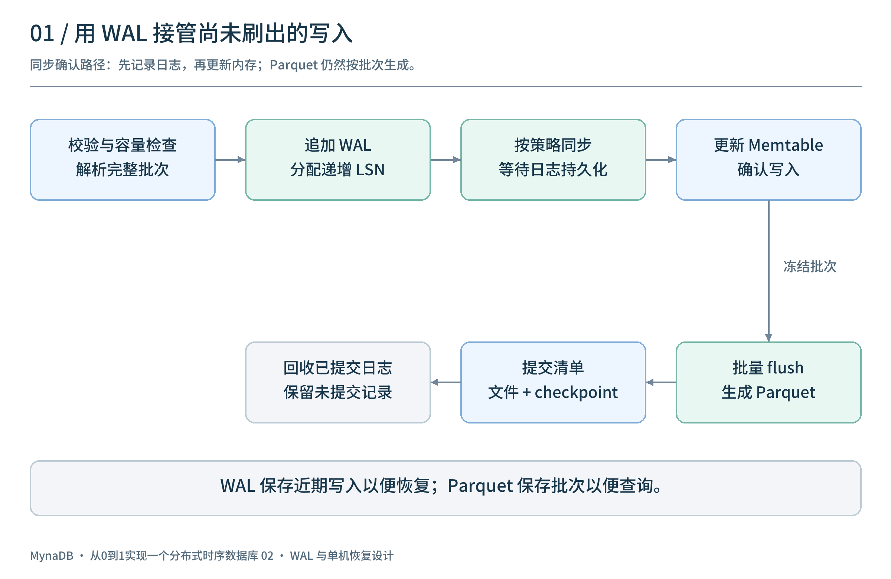
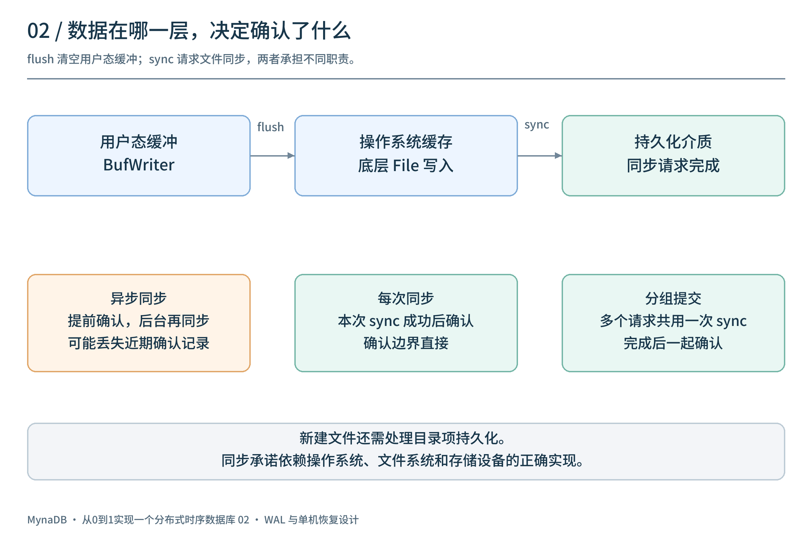
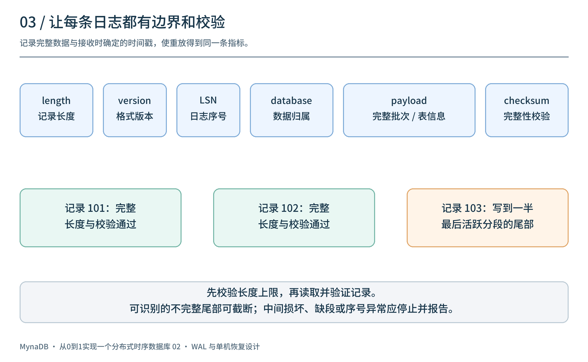
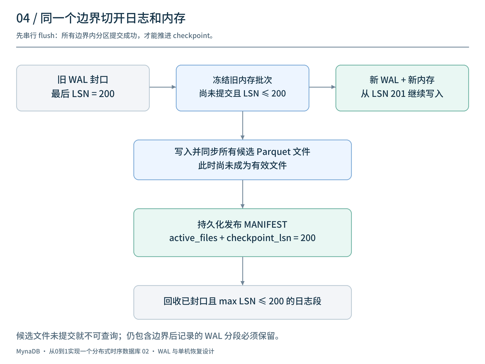
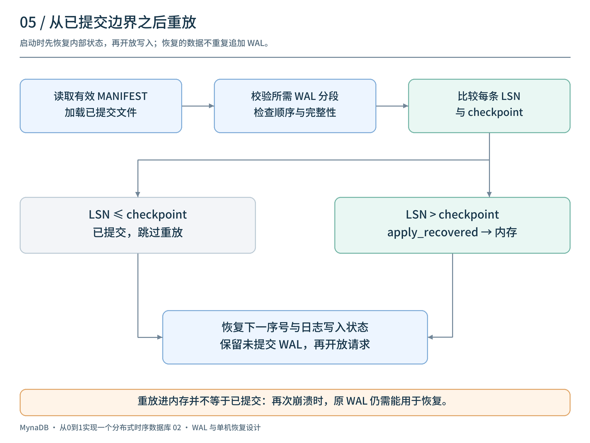
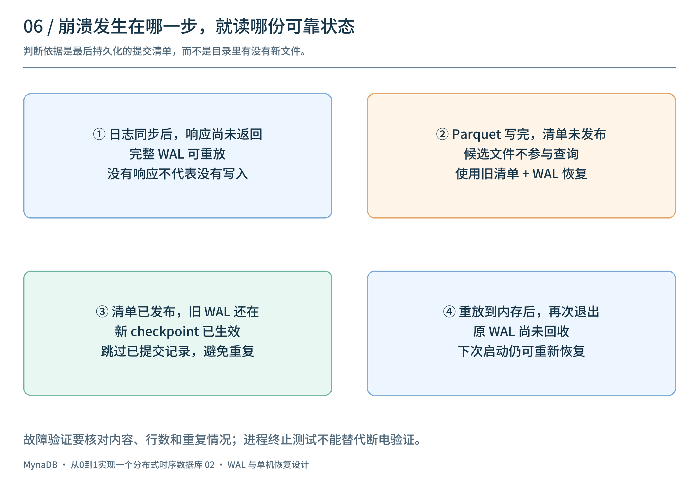

社区文章草稿 · WAL 与单机恢复设计 · 本地预览，尚未对外发表
从0到1实现一个分布式时序数据库（二）：写入成功之后，如何用 WAL 找回数据
上一篇把数据从 HTTP 接口送进内存，再批量写成 Parquet。这条链路能写、能查，但还有一个问题：请求已经返回成功，进程却在 flush 前退出，这批指标怎么办？
解决办法是给写入增加一份可重放的记录：WAL，Write-Ahead Log，预写日志。
这一篇围绕单机持久化设计，依次讲清写入确认、日志格式、刷盘边界和启动恢复。代码与接口均为精简设计示意，不要求逐标签复现。
1. 在内存之前，先记一份日志
WAL 与 Parquet 分工不同：WAL 记录近期写入，便于顺序追加和恢复；Parquet 汇集批次，服务于后续的列式查询。

写入顺序变为：
校验输入与容量 → 追加 WAL → 按策略同步日志 → 更新内存 → 确认写入
先完成必要的格式、类型和容量检查，再接管这批数据。使用单个写入协调器，为记录分配单调递增的日志序号 LSN（Log Sequence Number），并串行完成日志追加与内存插入。这样，后面的 flush 才能划出清晰边界。
// 流程示意：协调器同时负责写入与 flush 的切换边界。
validate_and_reserve(&batch)?;
let lsn = wal.append(&batch)?;
if policy.requires_sync() {
wal.sync()?;
}
memtable.insert(lsn, batch)?;
acknowledge(lsn);
这里的关键是：日志失败就不能返回成功；日志已接管、但内存更新失败的数据，仍需通过恢复或重试处理。 如果客户端没有收到响应，也不能直接认定写入一定没发生；客户端重试去重需要另行约定幂等键。
2. 分清“写入日志”和“日志已持久化”
调用文件写入方法，不代表数据已经到达持久化介质。使用 BufWriter<File> 时，至少要分清下面几个位置：

BufWriter::flush() 将用户态缓冲交给底层 writer；要请求文件同步，还需要调用 File::sync_all()。关闭文件不能代替显式处理同步错误。这两层职责可分别参考 Rust 的 BufWriter 文档和 File::sync_all 文档。
writer.write_all(&encoded_record)?;
writer.flush()?; // 清空 BufWriter 的缓冲
writer.get_ref().sync_all()?; // 请求同步文件数据及元数据
围绕确认时机，可以提供三种策略：
| 策略 |
什么时候确认 |
主要取舍 |
| 每次同步 |
本次日志同步成功后 |
确认边界直接，但同步调用可能较频繁 |
| 分组提交 |
多个请求共用一次同步，完成后统一确认 |
摊薄同步开销，增加少量等待 |
| 异步同步 |
追加到约定缓冲层后确认，后台再同步 |
延迟较低，但故障时可能丢失最近确认的记录 |
分组提交也可以等待持久化，只是让多个请求共用一次同步；不能将它与“提前确认”的异步模式混为一谈。异步模式的损失窗口取决于实际同步进度，不是配置一个周期就能保证固定上限。
文件同步也不是全部：创建日志分段时，还需按目标文件系统的语义持久化目录项。整个承诺建立在操作系统、文件系统和设备正确实现同步语义的前提上。
3. 让日志能被逐条读取，也能发现损坏
日志需要包含足够的信息，才能在重启后重建同一批数据。

可以先设计一种简单格式：
[length][version][LSN][database][payload][checksum]
length 用于确定记录边界；version 用于识别编码格式；LSN 表示写入顺序；payload 保存完整批次及其表归属；checksum 检查记录内容是否损坏。读取长度后应先验证上限，再分配内存。
还有一个容易忽略的细节：如果写入时省略时间戳，必须在接收时补齐并记入日志。恢复时重新取“当前时间”，会把同一条记录变成另一个采样时刻。
进程可能在写到一半时退出，所以最后一条记录可能不完整。恢复器应区分：
- 最后一个活跃分段的未完成尾部：在已验证的完整记录边界停止，并在再次追加前截断无效尾部。
- 中间记录校验失败、序号异常或缺少必要分段：停止并报告，不能跳过去继续宣称恢复成功。
校验和用于发现损坏，不负责修复数据。恢复目标是可解释的完整记录序列，而不是尽可能多地拼出几行。
4. 刷出一批数据，再推进恢复边界
写入持续发生，flush 也在后台运行。直接“刷完内存，再删除所有旧日志”很危险：旧日志可能混入了尚未刷出的新记录。
先让 WAL 与内存批次拥有同一个切换边界：

例如，在写入协调器中完成一次短暂切换：
旧 WAL 封口：最后一条 LSN = 200
旧内存批次冻结：包含尚未提交且 LSN ≤ 200 的记录
新 WAL / 新内存：从 LSN 201 继续接收写入
切换必须等已经分配序号的写入完成日志追加和内存插入，不能让边界前的一条记录漏进新批次。长时间的 Parquet I/O 则交给后台，避免一直占用写入协调器。
随后把冻结批次写成候选 Parquet 文件。只有边界内所有分区的数据都可靠保存，才能宣布“200 以前已经完成”。 第一版可以先串行执行 flush；以后并行化时，仍只能推进连续完成的前缀，不能取各任务完成序号的最大值。
为了把“哪些文件有效”和“日志重放到哪里”绑定起来，可以使用一份小型提交清单：
MANIFEST
generation: 12
checkpoint_lsn: 200
active_files: [此前文件..., 本次新文件...]
这是本文采用的提交设计：先同步候选文件，再写入并同步新的清单；在支持相应语义的本地文件系统上，以同文件系统原子替换发布清单，并同步目录项。查询与恢复都以这份已提交清单为准，不能把目录里所有文件都当成有效数据。关于文件、目录同步与提交顺序的基础原理，可参考 SQLite 的 Atomic Commit。
一旦清单持久化成功，就可以回收已经封口、且最大 LSN 不超过 checkpoint 的 WAL 分段。仍包含边界后记录的分段要保留；不能只根据文件年龄删除。清单中的 checkpoint 也不能随着日志删除而清空，它仍是下次恢复的依据。
5. 重启时，从 checkpoint 之后继续
有了明确的提交边界，恢复流程可以保持直观：

读取有效清单 → 加载已提交文件
→ 按顺序校验必要 WAL 分段
→ 跳过 LSN ≤ checkpoint 的记录
→ 将后续完整记录重建到内存
→ 恢复序号与日志写入状态 → 开放请求
正常写入会先追加日志再修改内存，恢复写入则直接调用内部的 apply_recovered，不再把同一记录写回 WAL。重启后的序号应超过已提交和已恢复记录中的最大值。
let state = load_committed_manifest()?;
let mut next_lsn = state.checkpoint_lsn + 1;
for record in read_and_validate_wal()? {
if record.lsn > state.checkpoint_lsn {
memtable.apply_recovered(&record)?;
next_lsn = record.lsn + 1;
}
}
这段代码省略分段排序、损坏处理和序号校验，展示的是重放边界。
重放进内存后，原 WAL 仍然需要保留。此时如果再次崩溃，必须还能重做恢复；等恢复数据按上一节的提交协议完成 flush，才能推进 checkpoint、回收对应日志。
清单尚未引用的候选 Parquet 文件属于未提交产物。恢复时不读取它们，由清理任务回收。因此，“文件写完但清单没发布”的崩溃不会让查询同时读到文件数据和重放数据。
6. 用故障位置检查设计是否闭合
正常停止时，可以先停止接收新写入，等待在途写入完成，再同步 WAL、处理待提交数据。异常退出时则必须依靠已经持久化的状态恢复。

可以从下表安排最小故障验证：
| 中断位置 |
预期行为 |
| WAL 只写到半条记录 |
完整前缀可读取，活跃分段的不完整尾部被识别 |
| 日志同步后、返回响应前 |
完整日志可重放；客户端未收到响应不代表没写入 |
| Parquet 已写完、清单未发布 |
旧清单继续有效，候选文件不参与查询，日志用于重放 |
| 清单发布后、旧 WAL 删除前 |
从新 checkpoint 恢复，避免重复应用已提交记录 |
| 恢复进内存后再次退出 |
原 WAL 仍在，下次可以再次重放 |
为每条测试数据设置稳定标识，分别核对记录内容、数量、重复情况和重启后的序号。再覆盖磁盘满、同步失败和提交清单失败，检查错误是否传播，以及必要日志是否仍被保留。日志磁盘不足时应产生背压或拒绝新写入，不能删除未提交日志来腾空间。
这些是验证设计的场景，不是本文已经执行的测试结果。kill -9 可以模拟进程被强制终止，但不能替代操作系统崩溃、断电和存储设备故障验证。
这一阶段给单机数据库补上了恢复路径：WAL 接管未提交写入，Parquet 保存批次，checkpoint 记录已完成的连续前缀，提交清单统一文件可见性。 下一篇再讨论复制：当故障范围从一个进程扩大到一台机器时，怎样把写入交给另一个节点。
项目源码：panbooks/mynadb · 中文文档。